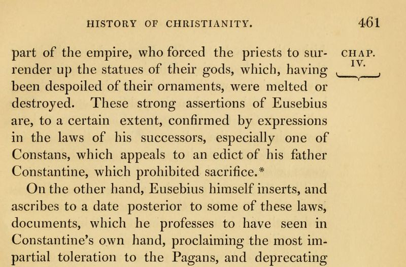

The Donatists and the Circumcellions (vol. II, pp. 372–375)
English: London 1840, vol. II, ch. I, p. 375, scan n394; the account of the schism begins on p. 372 (n391).
… duty of slaying by thousands the renegades, or the unbelievers. In vain Constantine at length published an edict of peace: the afflicted province was rent asunder till the close of his reign, and during that of his son, by this religious warfare. For, on the other hand, the barbarous fanaticism of the Circumcellions involved the Donatist party in the guilt of insurrection, and connected them with revolting atrocities, which they were accused of countenancing, of exciting, if not actually sanctioning by their presence. That which in the opulent cities, or the well-ordered communities, led to fierce and irreconcileable contention, grew up among the wild borderers on civilisation into fanatical frenzy.
Lecky’s note 14 supports his sentence that “any blood that was at this time shed seems to have been due to the excessive turbulence of the Circumcelliones”. Milman’s margin dates Constantine’s edict of peace to A.D. 321.
Eusebius’s “strong assertions” and Constantine’s own toleration (vol. II, pp. 460–464)
English: London 1840, vol. II, ch. IV, p. 461, scan n480, with Milman’s footnote.

… who forced the priests to surrender up the statues of their gods, which, having been despoiled of their ornaments, were melted or destroyed. These strong assertions of Eusebius are, to a certain extent, confirmed by expressions in the laws of his successors, especially one of Constans, which appeals to an edict of his father Constantine, which prohibited sacrifice.*
On the other hand, Eusebius himself inserts, and ascribes to a date posterior to some of these laws, documents, which he professes to have seen in Constantine’s own hand, proclaiming the most impartial toleration to the Pagans, and deprecating compulsion in religious matters. “Let all enjoy the same peace; let no one disturb another in his religious worship; let each act as he thinks fit; let those who withhold their obedience from Thee (it is an address to the Deity), have their temples of falsehood if they think right.” He exhorts to mutual charity, and declares, “It is a very different thing willingly to submit to trials for the sake of immortal life, and to force others by penalties to embrace one faith.” These generous sentiments, if Constantine was issuing edicts to close the temples, and prohi[bit] …
* Cesset superstitio, sacrificiorum aboleatur insania. Nam quicunque contra legem divi Principis, parentis nostri, et hanc nostræ mansuetudinis jussionem ausus fuerit sacrificia celebrare, competens in eum vindicta, et præsens sententia exseratur. Cod. Theodos. xvi. 10. 2.
Milman’s footnote translates: “Let superstition cease; let the madness of sacrifices be abolished. For whoever, against the law of the deified emperor our father and this command of our clemency, dares to celebrate sacrifices, let fitting punishment and immediate sentence be executed upon him.” Lecky quotes the same law in his note 21. For Constantine’s law on the temples see also the Codex Theodosianus XVI page.
Further down the rabbit hole
Sources that Lecky cites in the notes next to the ones that cite this page.
- Palmer, A Treatise on the Church of Christ“Whosoever is separated from the Catholic Church … will not have life”
- Gibbon, Decline and Fall of the Roman EmpireAn Augustine quotation and a stronger claim about Aliturus
- Eusebius, Life of ConstantineThe emperor’s biographer on the ban on sacrifice: with a translator’s footnote that limits it
- Simancas, De Catholicis InstitutionibusAn inquisitor’s handbook: no faith with heretics, and torture
- Paramo, De origine et progressu officii sanctae inquisitionisWhy the dead are tried for heresy
- Bédarride, Les Juifs en France, en Italie et en EspagneWhen Christianity came to power, the Jews’ persecution began, and a Pope wrote that God does not rejoice in bloodshed
Backlinks
Every place in Rationalism in Europe that links to this page (generated automatically when the site is built).